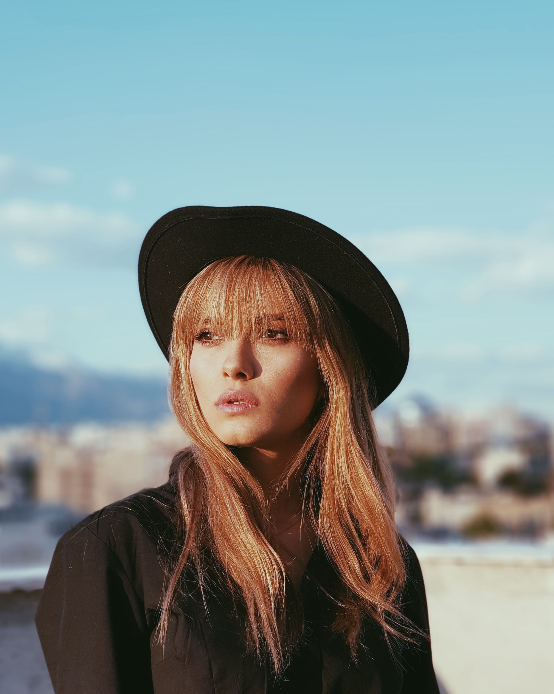
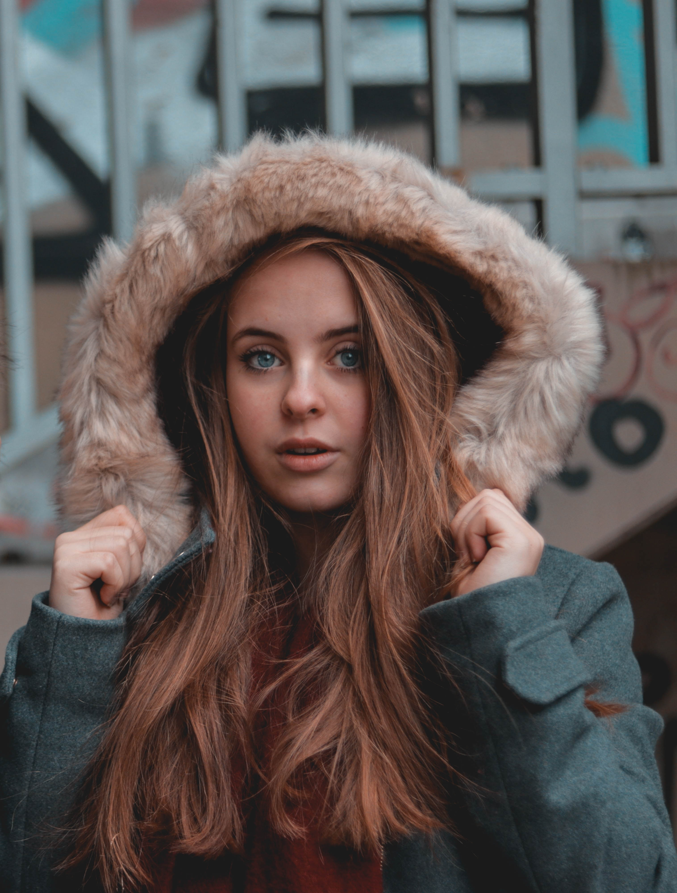
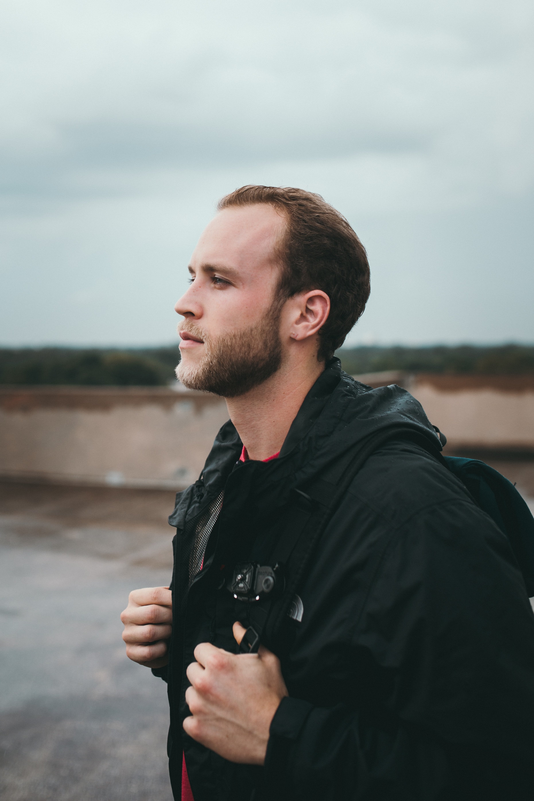
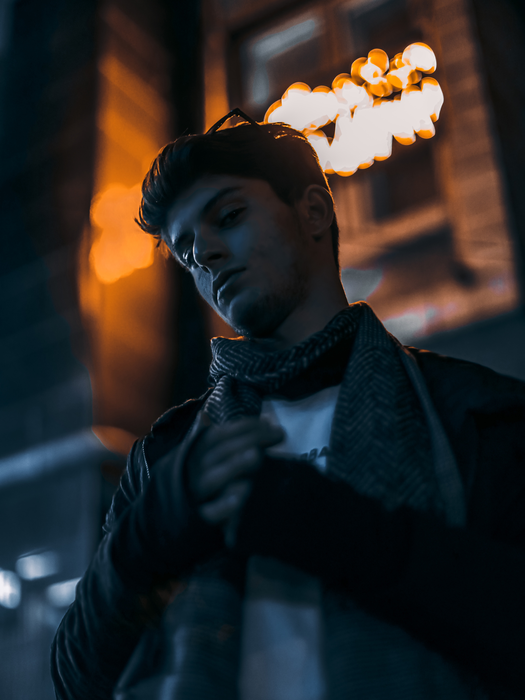
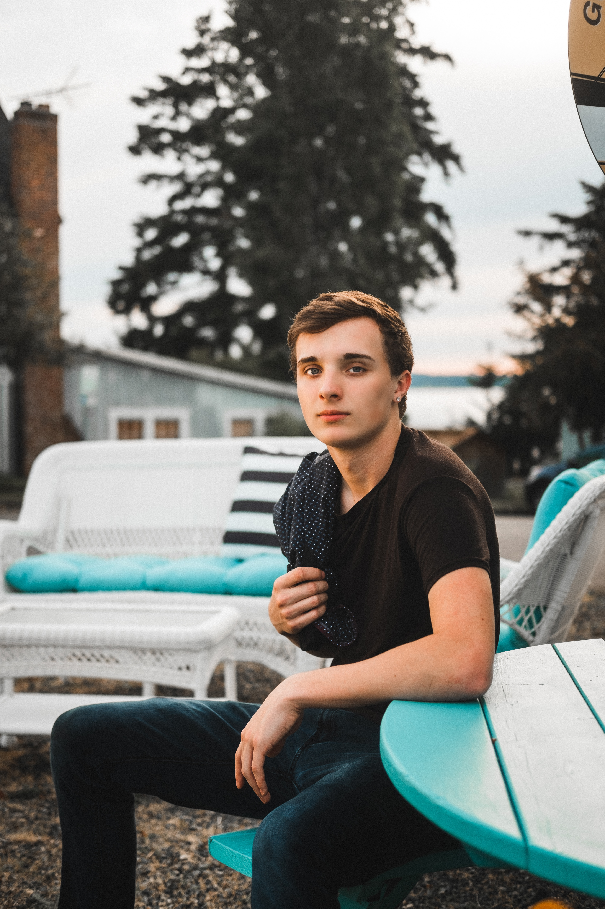

What is Portrait Photography?
Portrait photography is the art of capturing a person's likeness and personality through photographs. It can be done in a studio or on location, and can be posed or candid. The goal of portrait photography is to create a lasting image that captures the essence of the subject.
How to Get Started in Portrait Photography
Getting started in portrait photography can be exciting and challenging. Here are some tips to help you get started:
- Invest in a good quality camera and lenses
- Learn about lighting and how it affects your subject
- Choose the right background and props for your subject
- Communicate with your subject to create a comfortable and relaxed atmosphere
- Experiment with different angles and compositions
Examples of Stunning Portrait Photography
Here are some examples of stunning portrait photography:




